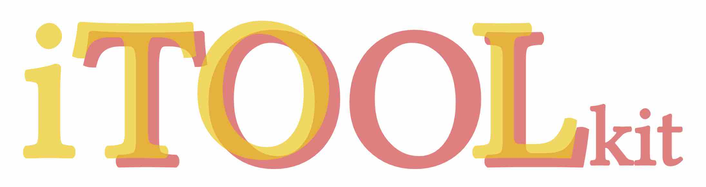

Helper Functions for Interactive Tree Of Life (iTOL)
Support all 114 themes among all 23 template types in iTOL v6
High throughput generate templates in one command
Learn published template themes and use theme
Save all-in-one reproducible data locally
# from CRAN
install.packages("itol.toolkit")
# from GitHub
# install.packages("devtools") # if you have not installed "devtools" package
devtools::install_github("TongZhou2017/itol.toolkit")
# load package
library(itol.toolkit)
# read data
tree <- system.file("extdata",
"tree_of_itol_templates.tree",
package = "itol.toolkit")
data("template_groups")
df_group <- data.frame(id = unique(template_groups$group),
data = unique(template_groups$group))
# create hub
hub <- create_hub(tree = tree)
## create unit
unit <- create_unit(data = df_group,
key = "Quickstart",
type = "DATASET_COLORSTRIP",
tree = tree)
## add unit into hub
hub <- hub + unit
## write template file
write_hub(hub,getwd())Please open an issue to report bugs, propose new functions, or ask for help.